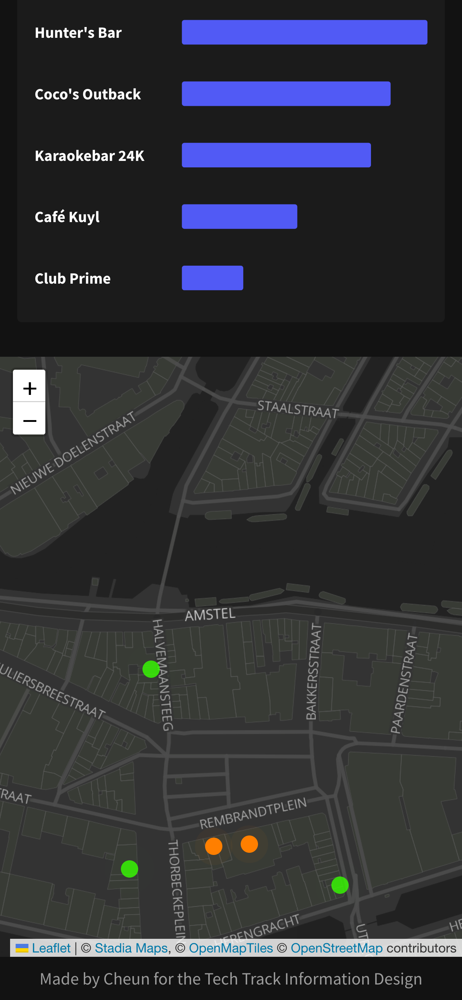

During my Information Design minor I did a project where I had to develop a web-app where I had to show data in a presentable way. For this I decided to develop a mobile app which shows how busy certain bars and clubs are in Amsterdam. Therefore I used new technologies such as D3, GreenSock, and Leaflet.
In the early stages of this project, my aim was to create something useful for people travelling, using live data from an API. Initially, I was thinking about doing something with airplanes but it felt too similar to apps like Flightradar 24. Then I remembered an issue I had during holiday: figuring out how busy clubs were in the city. Existing apps were slow and clunky and each club had to be checked one by one. With this in mind, I decided to develop a real-time view of the crowd levels at all clubs in Amsterdam.
Next, I began to look for an API that could provide real-time crowd data. However, suitable options were either cost money or it was written in unfamiliar programming languages. I did find some Javascript solutions, but they cost money due to the need of a Google API Key. Since I coudldn't find a good API, I decided to create my own dataset using Google's Busy Stats. This approach still allowed me to develop a helpful tool for people to check crowd levels at different clubs and bars.
Once I had my dataset, I started to focus on creating a map to visually represent crowd levels. I decided to use color coding and animations, with the animation becoming livelier as a place became busier. Leaflet, a tool I used to lay down markers for each location, was straightforward to set up. However, the task of coloring each marker based on crowd sizes became a challenge. With Laura's suggestion of assigning specific styles to the markers, and animating them, I was able to overcome this hurdle.
Another feature I included was route descriptions that became accessible by clicking on a marker. This was harder to do than expected due to the variability in Google maps links. Yet, after some experimentation, I achieved the desired outcome.
At the end of my project, my attention turned towards refining my code. Originally, my functions lacked flexibility due to "fixed" variables. Learning about the importance of parameters from my professors led me to change all my necessary functions into reusable ones. I also grouped global variables into a single object for easier readability and efficiency.